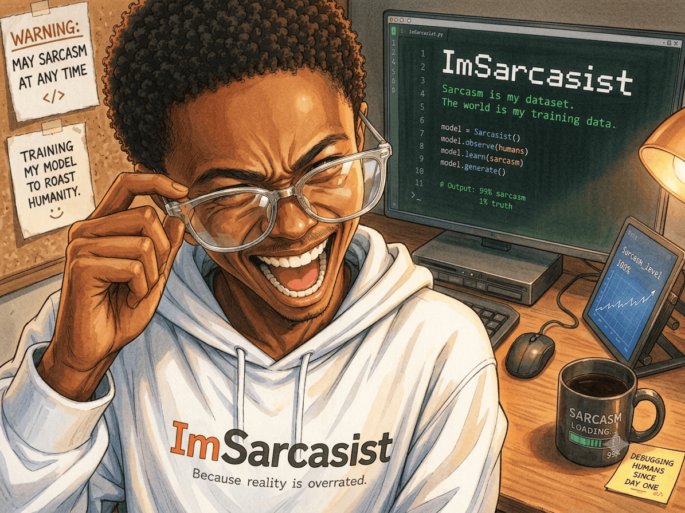
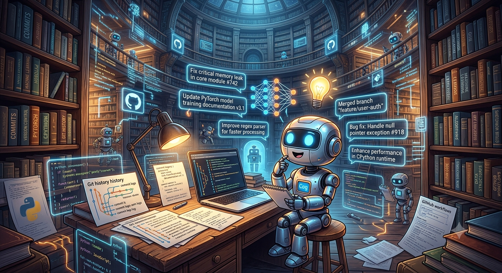
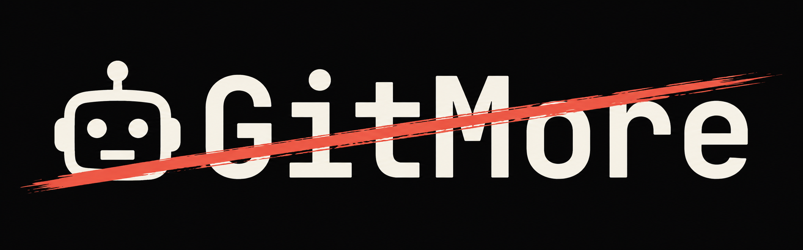
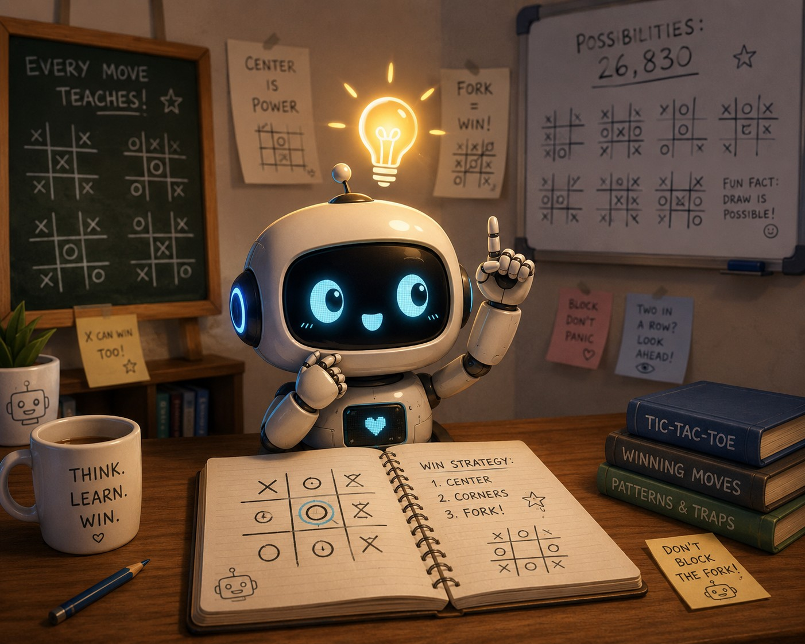

most projects taged here are associated with deep learning
Pyne Framework
pyne framework is tiny Pytorch alike framework - implements Autograd, Tensor element-wise operations,
matrix multiplication, almost every useful tensor operation for deep learning in torch, this Project is open source
for Deep Learning Frameworks behind the scenes,
note: it doesn't do exactly what real framework do!
some steps are implementant according to my understanding...

a = pyne.tensor([[2.0, -3.0], [4.0, -2.0]], requires_grad=True)
b = pyne.randn((2, 2), requires_grad=True)
c = a * b
c.shape # pyne.Size([2, 2])
c.backward() # computes dC/dA, dC/dB (gradients of inputs in respect to final step)
ImSarcasist v1
ImSarcasist is a language modeling - built to model humor sarcasms,
The idea is could it really generate a real sense of humor without even knowing about grammar?
The dataset is collected from the Reddit Sarcasm csv datafile to train the model to generate the sarcasms learned from data.
the length of the dataset is roughly 231k of sarcasms strings
The model architectures are LSTMs and MLP.
The model size is 500k parameters and 5 layers

GitMore v1
Gitmore v1 is an NN model built on ANN - MLP, with the dataset of git commits messages.
The dataset is collected from the Cpython open source code to train the model to generate the Git commits learned from data.
the length of the dataset is roughly 180k of commits strings
The model size is 265k parameters and 13 layers

GitMore v2.0
Gitmore v2.0 is an NN model built on (Recurrent Neural Networks entirely), with the dataset of git commits messages.
The Gitmore v2.0 is twice smaller than the v1 built on MLP with context window.
One other good thing about the v2.0 model is that I was able to beat the previous model's training and validation loss, even with fewer epochs and smaller size of the model.

GitMore v2.1
Gitmore v2.1 is an NN model built on (Recurrent Neural Networks and extended Context window), with the dataset of git commits messages.
The size of this model is twice bigger than the v2.0 model, means it's equal to v1
With GitMore v2.1 I was able to achieve even lower loss of 1.02, The commits comming out of the model were even more surprising they were very good.
Because the model was given the Context with every step of character prediction and the model carrying forward its memory -> it was a very good point that the model would be capable of solving the problem even better!
GitMore v2.15
Gitmore v2.15 is an NN model built on (Recurrent Neural Networks and extended Context window) && with solution to vanishing gradients in RNN.
GitMore v2.15 is built to improve the problem we had with GitMore v2.1, which was the problem of vanishing gradients.
My solution in this situation was to implement the BatchNorm layer within the RNN itself, this allow the data to be normalized before going through squashing activation 'Tanh'
The size of this model is 270k parameters and I achieved a very good loss of '<0.88>'
Tic-Tac-Toe, Self-Learning Engine
Tictactoe self-learning engine is the game engine that is deployed in the world of tictactoe with no idea or rule of the game,
Will figure things out on its own, the engine is given all the freedom to fail and believe it would figure things out on its own,
Know what? after tens of thousands of games playing against itself, it start obeying the game rules as violating the rules costs it.
yet this engine is not powerful enough to outsmart a human, that's just because of the architecture used to develop it "MLP, ANN"
this is actually fun btw I will deploy it into web app to actually play with it...

tinyLinearModel (Manual Learning)
A minimal linear regression model trained using manually written forward pass, loss calculation, and parameter updates.
Forward propagation
Loss functions
Gradient-based optimization
Learning dynamics
Autograd Engine (Basic)
A foundational automatic differentiation-style system that centralizes gradient computation and parameter updates.
Gradient flow
Backpropagation mechanics
Optimization pipelines
Framework-level ML design